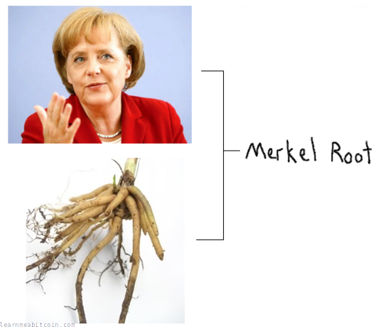

Merkle root


Merkle Root 是通过将成对的 TXID 组合进行哈希运算创建的，以获取一个简短且独特的指纹，代表区块中的所有交易。
这个 Merkle Root 被放置在区块头中，以防止区块内容随后被篡改。因此，如果有人试图从区块中添加或删除交易，区块内交易的 Merkle Root 将不再与区块头内的 Merkle Root 相匹配。
换句话说，Merkle Root 是连接区块头与区块中交易的纽带。
随机示例
区块
TXID 列表
TXID 列表，以空格、逗号或换行符分隔。引号和括号会被忽略。
TXID 应以反向字节顺序（如它们在区块链浏览器上显示的那样）输入，但在计算 Merkle Root 之前，它们会被转换为自然字节顺序。
TXIDs (0)
Merkle Root (自然字节顺序)
来自哈希函数的字节顺序
Merkle Root (反向字节顺序)
在区块链浏览器上显示的字节顺序
0 秒
结构¶
如何创建 Merkle Root？
Merkle Root 是通过在树状结构中对 TXID 进行哈希运算创建的。
- 将 TXID 成对地组合并进行哈希运算。
- 注意: 如果最后剩下一个单独的项，则将其与自身进行哈希。
- 提取得到的哈希值，并将它们成对组合并哈希。
- 重复此过程，直到只剩下一个哈希值。
{kind=link}
代码¶
这里有一些用 Ruby 编写的从 TXID 列表创建 Merkle Root 的代码。该代码非常易读，即使您不认为自己是一名程序员，也值得通读这些步骤。
require 'digest' # Need this for the SHA256 hash function
# Hash function used in the merkle root function (and in bitcoin in general)
def hash256(hex)
binary = [hex].pack("H*")
hash1 = Digest::SHA256.digest(binary)
hash2 = Digest::SHA256.digest(hash1)
result = hash2.unpack("H*")[0]
return result
end
def merkleroot(txids)
# Exit Condition: Stop recursion when we have one hash result left
if txids.length == 1
# Convert the result to a string and return it
return txids.join('')
end
# Keep an array of results
result = []
# 1. Split up array of hashes in to pairs
txids.each_slice(2) do |one, two|
# 2a. Concatenate each pair
if (two)
concat = one + two
# 2b. Concatenate with itself if there is no pair
else
concat = one + one
end
# 3. Hash the concatenated pair and add to results array
result << hash256(concat)
end
# Recursion: Do the same thing again for these results
merkleroot(result)
end
# Test (e.g. block 000000000003ba27aa200b1cecaad478d2b00432346c3f1f3986da1afd33e506)
txids = [
"8c14f0db3df150123e6f3dbbf30f8b955a8249b62ac1d1ff16284aefa3d06d87",
"fff2525b8931402dd09222c50775608f75787bd2b87e56995a7bdd30f79702c4",
"6359f0868171b1d194cbee1af2f16ea598ae8fad666d9b012c8ed2b79a236ec4",
"e9a66845e05d5abc0ad04ec80f774a7e585c6e8db975962d069a522137b80c1d"
]
# TXIDs must be in natural byte order when creating the merkle root
txids = txids.map {|x| x.scan(/../).reverse.join('') }
# Create the merkle root
result = merkleroot(txids)
# Display the result in reverse byte order
puts result.scan(/../).reverse.join('') #=> f3e94742aca4b5ef85488dc37c06c3282295ffec960994b2c0d5ac2a25a95766
字节顺序: 在创建 Merkle Root 时，TXID 必须处于自然字节顺序。生成的 Merkle Root 也将处于自然字节顺序，但在区块链浏览器上会以反向字节顺序显示。
如果区块中只有一笔交易，则 Merkle Root 将与该交易的 TXID 相同。
Merkle 树¶
为什么我们使用 Merkle Root？
这种将列表项哈希在一起的结构被称为 Merkle 树 (merkle tree)。但为什么要使用 Merkle 树呢？
我的意思是，我们本来可以一次性对所有 TXID 进行哈希。那将为区块中的所有交易创建一个指纹，并且这也是可行的。但随后如果我们想知道某个特定的 TXID 是否用于创建该指纹，我们将需要知道所有其他 TXID：
{kind=link}
这就是 Merkle 树的用武之地。如果我们改用 Merkle 树，我们只需要知道沿着树路径的一些 分支，就可以验证一个 TXID 是否用于创建根哈希：
{kind=link}
这一路径被称为 Merkle 证明 (merkle proof)。
因此，通过使用 Merkle 树，我们可以找出某个交易是否是区块的一部分，而无需知道区块中的每个其他 TXID。或者用技术术语来说，Merkle 树提供了一种有效的方法来证明某物存在于一个集合中，而无需知道整个集合。
而如果您在处理包含 2,000 多笔交易的区块，Merkle 树比将所有 TXID 一次性哈希在一起要高效得多。
{kind=link}
Merkle 证明示例¶
假设我们有一个区块头（因此也有 Merkle Root），对应区块 00000000000000000027ad67588ebcf18eabe2250c411e6b79ad1c009b4cb54f。
现在，假设我们想验证交易 f66f6ab609d242edf266782139ddd6214777c4e5080f017d15cb9aa431dda351 是否在此区块内。
这是证明该交易在此区块内的 Merkle 证明 (merkle proof)：
txid
----
f66f6ab609d242edf266782139ddd6214777c4e5080f017d15cb9aa431dda351 (reverse byte order)
merkle proof
------------
50ba87bdd484f07c8c55f76a22982f987c0465fdc345381b4634a70dc0ea0b38 left
96b8787b1e3abed802cff132c891c2e511edd200b08baa9eb7d8942d7c5423c6 right
65e5a4862b807c83b588e0f4122d4ca2d46691d17a1ec1ebce4485dccc3380d4 left
1ee9441ddde02f8ffb910613cd509adbc21282c6e34728599f3ae75e972fb815 left
ec950fc02f71fc06ed71afa4d2c49fcba04777f353a001b0bba9924c63cfe712 left
5d874040a77de7182f7a68bf47c02898f519cb3b58092b79fa2cff614a0f4d50 left
0a1c958af3e30ad07f659f44f708f8648452d1427463637b9039e5b721699615 left
d94d24d2dcaac111f5f638983122b0e55a91aeb999e0e4d58e0952fa346a1711 left
c4709bc9f860e5dff01b5fc7b53fb9deecc622214aba710d495bccc7f860af4a left
d4ed5f5e4334c0a4ccce6f706f3c9139ac0f6d2af3343ad3fae5a02fee8df542 left
b5aed07505677c8b1c6703742f4558e993d7984dc03d2121d3712d81ee067351 left
f9a14bf211c857f61ff9a1de95fc902faebff67c5d4898da8f48c9d306f1f80f left
merkle root
-----------
17663ab10c2e13d92dccb4514b05b18815f5f38af1f21e06931c71d62b36d8af (reverse byte order)
这个 Merkle 证明包含我们到达 Merkle Root 所需的 Merkle 树上的分支列表。这些分支还指示了它们是在“左边 (left)”还是在“右边 (right)”，以便您在哈希时按正确的顺序串联每一对。
要检查 TXID 是否构成 Merkle Root 的一部分，我们只需从 TXID 开始，然后通过该 Merkle 证明递归地串联和哈希，以确认我们得到了与区块头中相同的 Merkle Root 结果。
带宽¶
虽然 Merkle Root 最初在构建时需要花费更多精力，但在随后的验证时能节省带宽。例如，如果我们比较验证上区块中是否存在交易所需下载的数据量：
- 没有 Merkle Root: 我们需要下载 75,232 字节（2,351 x 32 字节 TXID）的数据来重建区块中所有交易的哈希值。
- 有 Merkle Root: 我们只需要下载 384 字节（沿着 Merkle 树路径的 12 x 32 字节分支）来重建 Merkle Root 哈希。
轻量级钱包¶
得益于 Merkle 树，您可以创建轻量级钱包（或“瘦节点”），它们可以验证交易是否已进入区块，而无需下载和存储整个区块链的开销。
这些钱包只需下载并存储区块头（每个仅 80 字节，而不是 1 MB+ 的区块），并使用其中的 Merkle Root（以及从全归档节点接收到的 Merkle 证明）来验证交易是否已被写入区块。
{kind=link}
轻量级钱包的一个流行示例是 Electrum。
不过我在这方面没有经验，这里有一些有趣的相关链接：
- https://bitcoin.stackexchange.com/questions/32529/what-is-a-thin-client
- https://bitcoin.stackexchange.com/questions/11054/how-do-spv-simple-payment-verification-wallets-learn-about-incoming-transactio
为什么它被称为 "merkle root"?¶
因为 Ralph Merkle 在 1979 年申请了该专利。
常见的误解。

资源¶
- James D'Angelo explaining Merkle Roots
- Understanding Merkle Trees - Why Use Them, Who Uses Them, and How to Use Them
感谢¶
- 感谢 Gabriele Semeraro 指出 Ruby 代码中的一个错误。我原本将返回结果的退出条件放在了对成对的 TXID 进行哈希运算的步骤之后。但如果您只剩下一个项，只需直接返回它而不用做任何更多工作。换句话说，如果区块中只有一笔交易，Merkle Root 就与 TXID 相同。